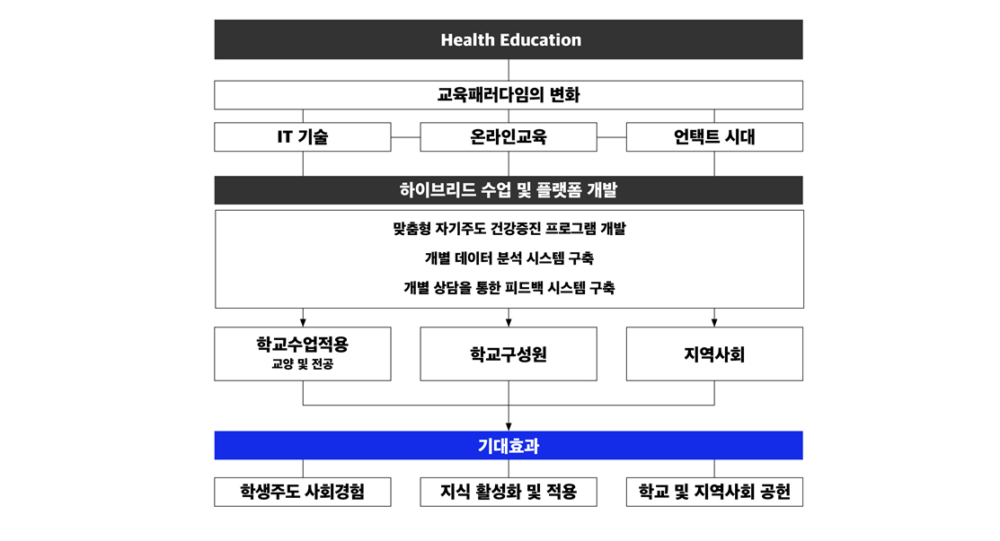
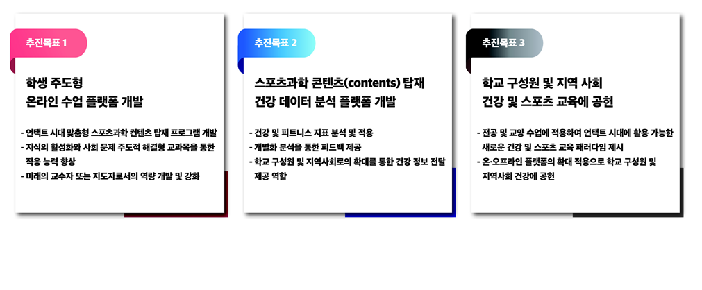
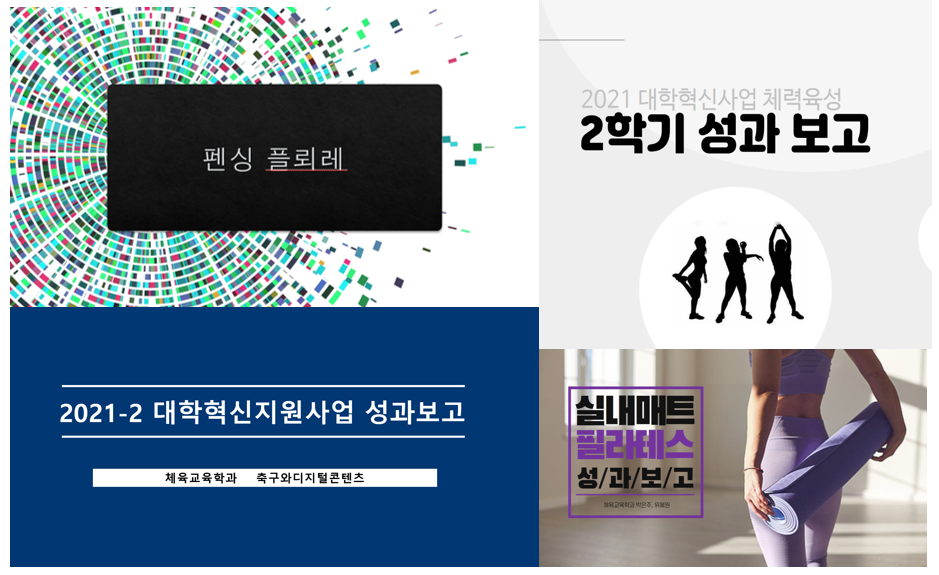

IT 기술 발달로 오프라인에서 온라인 플랫폼 활용도가 높아지는 교육 패러다임의 흐름과 함께 건강한 삶을 영위하고 신체활동 및 건강 증진 목표를 가지는 대학 교육의 변화가 필요합니다. 또한 COVID-19(코로나바이러스감염증-19)확산 및 장기화로 맞이한 언택트(untact) 시대의 대학 교육에도 새로운 변화가 필요합니다.
다양한 신체활동과 적극적인스포츠 참여를 통해 건광관리 및 체욱교육에 대한 패러다임은 고도화되고 있음에도 불구하고, 현재 대학 교육 현장에선 이와 관련하여 역량 있는 인재 양성 시스템의 변화가 미비합니다. 신체활동 및 스포츠 참여 개념이 여가활동에 국환되지 않고, 건강과 수명 유지 및 연장 그리고 삶의 질 향상이라는 영역으로 확장되고 있는 가운데, 대학 교육은 이러한 교육 패러다임의 변화 수용과 함께 새로운 교육적 대응 방법을 모색하기위해 이런 사업을 시행중입니다.
주요 사업

현재 대학에서의 교육 방식은 학생들이 직접 참여한느 실기 수업을 포함하여 대부분의 강의들이 교육 패러다임의 시대적 변화를 제대로 반영하지 못하고 과거 20-30년 전 교육 프로그램 체계를 유지하고 있습니다. 따라서 위와 같은 교육 프로그램 개발로 건강 교육 패러다임과 시대의 변화를 수용하고, 역량 및 경쟁력을 갖춘 인재 양성을 통해 학교 구성원 및 지역사회에 공헌 하고자합니다. 향후 IT 및 AI와 관련된 기술을 융합하여 교육 콘텐츠의 다양성을 도모하고, 효율적인 참여를 이끌어 낼 수 있는 프로그램의 개발을 통해 이론과 기술력을 겸비한 온라인 건강 교육 및 온라인 수업 프로그램을 갖춘 허브 대학으로 혁신할 것입니다.
이 프로그램을 통해서스포츠 참여 위쥐의 과거 교육 프로그램 수업 방식에서 건강 수명 유지-연장과 중-장년기의 건강 증진을 위한 신체활동 및 스포츠 참여라는 새로운 패러다임을 선도할 수 있는 역량을 가진 인재 양성을합니다. 교육프로그램의 변화를 통해 학생들이 습득한 지식과 경험을 바탕으로 현장에 적용하고 활성화하여 차후 사회에서 활용할 수 있는 능력을 배양합니다. COVID-19의 확산 및 장기화로 인한 언택트 시대에서 야기되는 전공 및 교양 실기수업에 대한 문제점을 미래 지향적 건광관리 교육 패러다임을 접목하여 학교 구성원뿐만 아니라 지역사회 구성원 또한 건강 유지 및 증진에 대한 혜택을 받을 수 있습니다.
주요 프로그램

주 플랫폼인 학과 홈페이지를 활용하여 건강 증진을 위한 학생 주도 온라인 수업 플랫폼을 개발합니다(학생-조교-교수의 합동 워크숍 및 온라인 콘텐츠 개발 공모를 통한 과학화된 온라인 수업 콘텐츠 개발)
스포츠 과학 콘텐츠를 기반으로 자료 분석 및 피드백에 대한 상담센터 운영을 통해 학생들의 교육 활성화를 이끌어내며,현장 적욕 가능한 교육이 이루어질 수 있도록 프로그램을 구성합니다.
또한 콘텐츠 개발을 위한 워크숍 및 공모전을 실시하여 학생들의 직접적 참여를 유도하고, SNS 및 학과 홈페이지와 연동하여 개발된 컨텐츠 보급 확산에 기여할 수 있도록 지원합니다.관련 현직 전문가 초청 강연 등을 통한 수업 참여를 통해서 학생들의 전문성 제고 및 진로탐색 기회를 제공합니다.
문제 해결형 교과목을 향후 각 학기 최소 1과목 이상을 개설하여 현장에 대한 경험을 통한 학습이 가능할 수 있도록 교과목을 재편합니다. 교과목 진행 과정에서 참여학생들의 인바디(inbody) 데이터, 활동시간, 걸음 수 등과같은 건강 및 신체활동 지료플ㄹ 수집하고 해당 데이터를 다양하게 분석 할 수 있는 방안에 대해 탐구합니다. 본 사업으로 개발된 프로그램들은 전공 및 교양수업 그리고 학교 구성원 및 지역사회와 공유하여 더욱 진일보된 콘텐츠를 탑재한 건강 교육프로그램의 혜택을 부여합니다.
성과보고회

주 플랫폼인 학과 홈페이지를 활용하여 건강 증진을 위한 학생 주도 온라인 수업 플랫폼을 개발합니다(학생-조교-교수의 합동 워크숍 및 온라인 콘텐츠 개발 공모를 통한 과학화된 온라인 수업 콘텐츠 개발)
스포츠 과학 콘텐츠를 기반으로 자료 분석 및 피드백에 대한 상담센터 운영을 통해 학생들의 교육 활성화를 이끌어내며,현장 적욕 가능한 교육이 이루어질 수 있도록 프로그램을 구성합니다.
또한 콘텐츠 개발을 위한 워크숍 및 공모전을 실시하여 학생들의 직접적 참여를 유도하고, SNS 및 학과 홈페이지와 연동하여 개발된 컨텐츠 보급 확산에 기여할 수 있도록 지원합니다.관련 현직 전문가 초청 강연 등을 통한 수업 참여를 통해서 학생들의 전문성 제고 및 진로탐색 기회를 제공합니다.
문제 해결형 교과목을 향후 각 학기 최소 1과목 이상을 개설하여 현장에 대한 경험을 통한 학습이 가능할 수 있도록 교과목을 재편합니다. 교과목 진행 과정에서 참여학생들의 인바디(inbody) 데이터, 활동시간, 걸음 수 등과같은 건강 및 신체활동 지료플ㄹ 수집하고 해당 데이터를 다양하게 분석 할 수 있는 방안에 대해 탐구합니다. 본 사업으로 개발된 프로그램들은 전공 및 교양수업 그리고 학교 구성원 및 지역사회와 공유하여 더욱 진일보된 콘텐츠를 탑재한 건강 교육프로그램의 혜택을 부여합니다.